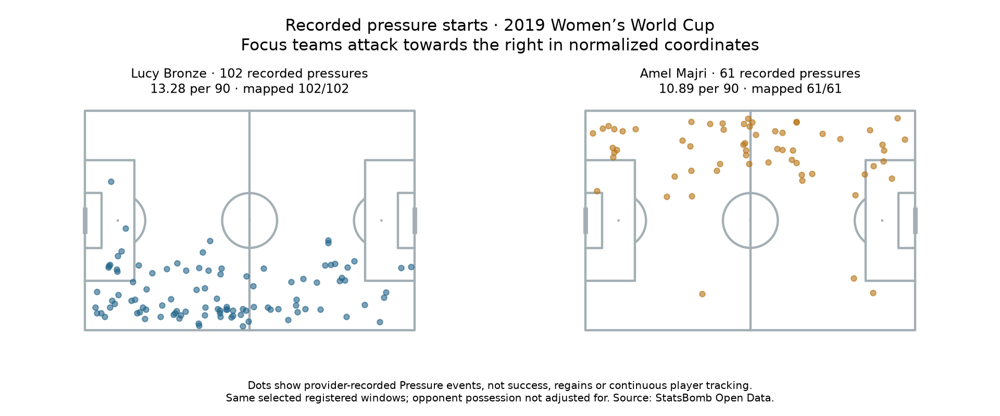

Football analyst training · Recruitment phase · Lesson 73
Add a defensive action to the profile.
Read: Soccermatics Lesson 3 — Counts of actions and Normalisation.
Fullbacks do more than pass. Now we count the provider's recorded Pressure events: actions where a player applies pressure to an attacking opponent.
The completed assignment
Bronze: 102 pressures ÷ 691.1842 minutes ×90 = 13.28 per 90 Majri: 61 pressures ÷ 504.22985 minutes ×90 = 10.89 per 90
We calculated the measure for all 35 players, using the same qualifying fixtures and registered playing windows. Across them, the selected ledger contains 2,034 recorded pressure events.

What the dots mean
Each dot is a recorded pressure start location. The map does not show the full run, all off-ball positioning or whether the action succeeded. Missing locations remain in the count and are reported as unmapped.
A player may face more opposition possession, follow different instructions or have different opportunities. No opponent-possession adjustment or ball-regain analysis has been made here.
A different data field
event['type']['name'] == 'Pressure'
This means the player applied pressure. A pass event marked under_pressure describes a player experiencing pressure; it is not counted as a defensive pressure action by that passer.
Practice: does one recorded pressure mean the player won the ball?
No. It records the pressure action. We need a separate, clearly defined outcome check to study what followed.
Run 73_fullback_pressure_activity.py in Spyder. Read the 35-player report. This custom worked assignment was assisted; ask your teacher about any unclear field or interpretation.